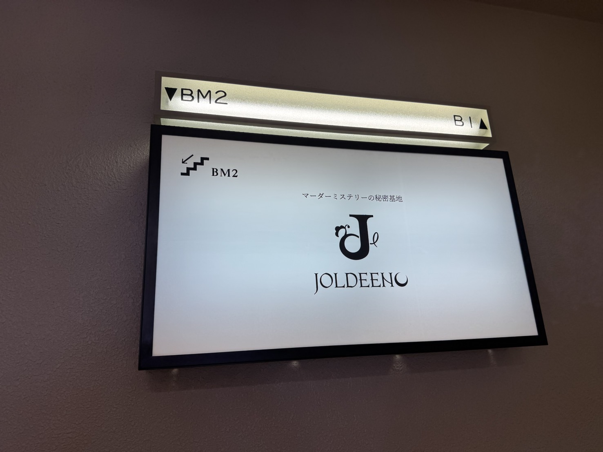

VIDEO

映像 / Video
TRPG配信 — サムネイル制作
江戸と未来が交差する物語。劇画調の世界観を16:9サムネイルで表現。

映像 / Video
江戸と未来が交差する物語。劇画調の世界観を16:9サムネイルで表現。

グラフィック / Graphics
映画ポスターをモチーフにした配信告知画像。X（Twitter）用。

Webデザイン / Web Design
謎解きプラットフォーム「escape.id」のWebメディアデザイン。

サイン / Signage
マーダーミステリー専門店の店頭看板。実際に設置されている実績あり。

サイン / Signage
「マーダーミステリーの秘密基地」を体現したロゴ展示サイネージ。

オリジナル / Original
r0yさん作曲・楽曲提供。作詞・歌唱を担当したオリジナル曲。

映像 / Video
マーダーミステリー『少女N』のPV映像。企画・映像制作を担当。

映像 / Video
男女デュエット歌ってみたのMV。歌唱・映像制作を担当。初めて制作したMV作品。

映像 / Video
NANIMONO様 マーダーミステリーイベント「コンティニューしますか？- episode 0 -」（2026.3.20）映像制作。

映像 / Video
NANIMONO様 マーダーミステリーイベント「コンティニューしますか？- episode 0 -」（2026.3.20）映像制作。

映像 / Video
NANIMONO様 マーダーミステリーイベント「コンティニューしますか？- episode 0 -」（2026.3.20）映像制作。

映像 / Video
NANIMONO様 マーダーミステリーイベント「コンティニューしますか？- episode 0 -」（2026.3.20）映像制作。
シナリオ / Scenario
ローファンタジー×群像劇。記憶を失った6人が「記録者の死」の真相に迫る協力捜査型マーダーミステリー。
シナリオ / Scenario
オカルト研究会3名 vs 生徒会3名。放課後の学校を舞台にした、笑いと謎が交差するストーリープレイング。
シナリオ / Scenario
近未来で活躍するアイドルがテーマのストーリープレイング作品。